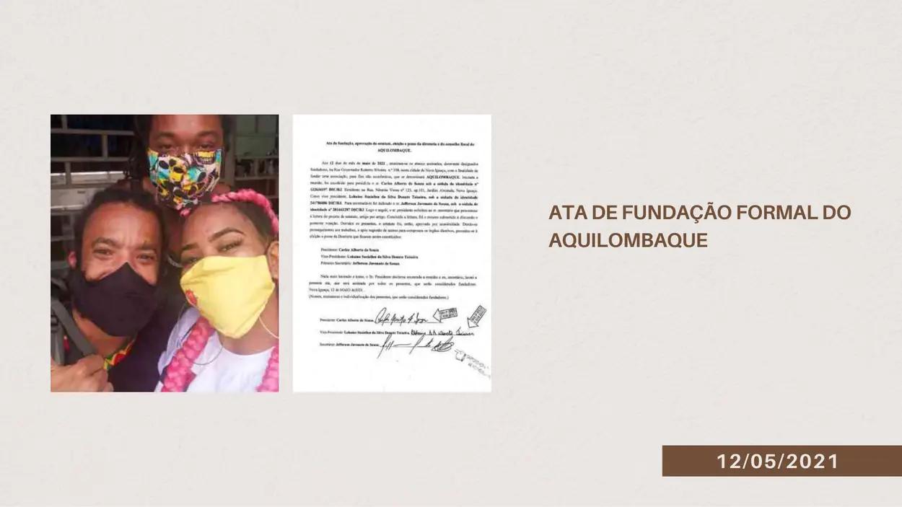
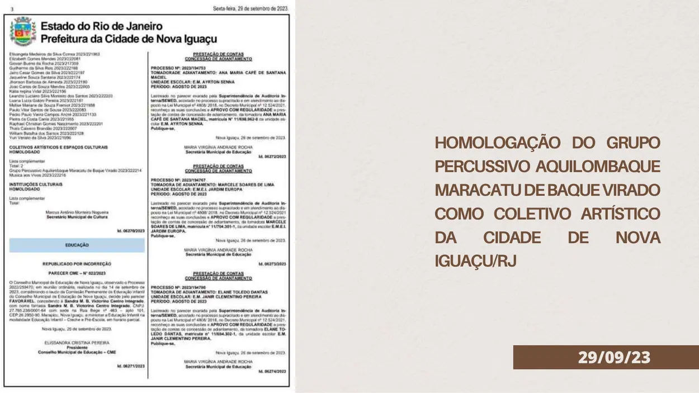
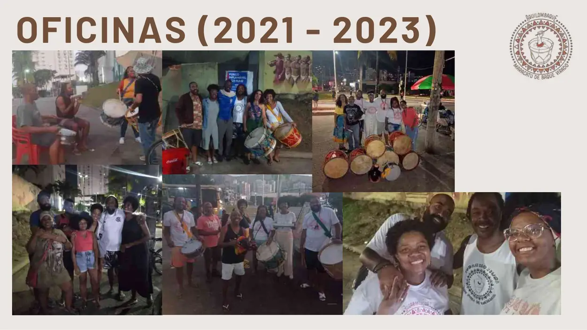
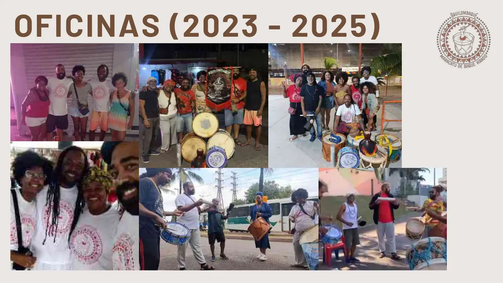
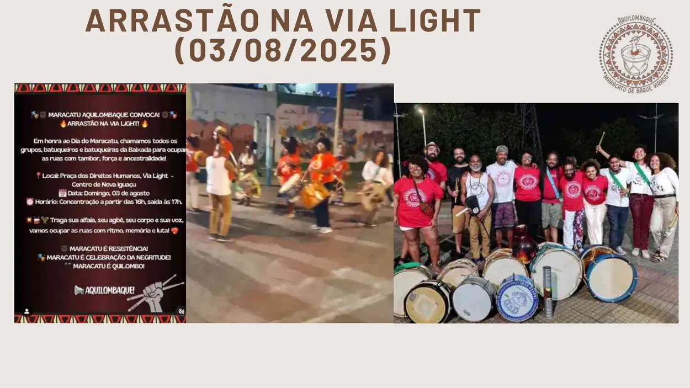
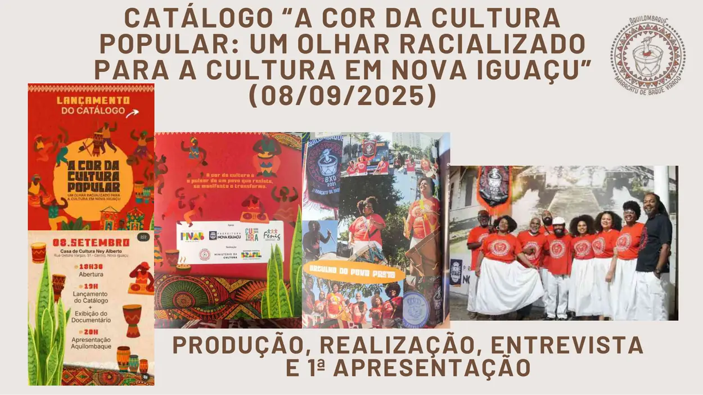
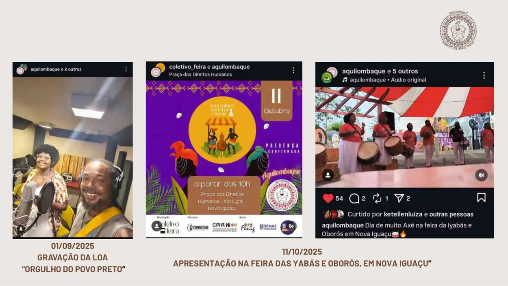

Fundação formal
O acervo registra “Ata de Fundação Formal do Aquilombaque” em 12/05/2021.
Fonte página 97O acervo registra a ata de fundação formal de 12/05/2021, a homologação como coletivo artístico da cidade de Nova Iguaçu em 29/09/2023, oficinas entre 2021 e 2025 e ações culturais realizadas em 2025.
Conteúdo organizado sem transformar propostas futuras em realizações passadas. Cada afirmação principal está vinculada às páginas do portfólio.
O acervo registra “Ata de Fundação Formal do Aquilombaque” em 12/05/2021.
Fonte página 97Em 29/09/2023, o portfólio registra a homologação do Grupo Percussivo Aquilombaque Maracatu de Baque Virado como coletivo artístico da cidade de Nova Iguaçu/RJ.
Fonte página 98Há conjuntos fotográficos identificados como oficinas de 2021–2023 e de 2023–2025.
Fonte páginas 99–100O portfólio registra o Arrastão na Via Light em 03/08/2025 e o catálogo “A Cor da Cultura Popular: um olhar racializado para a cultura em Nova Iguaçu”, em 08/09/2025.
Fonte páginas 101–102As imagens abaixo são reproduções das páginas-fonte usadas para esta ficha de comprovação.







Esta ficha foi construída a partir do Portfólio LUBESNI anexado ao acervo institucional. Para uso em editais, recomenda-se enviar o PDF original junto com o endereço desta página e, quando houver, a fonte pública externa indicada.